CALM: Conditionally Additive Local ModelsInterpretability-by-Design with Accurate Locally Additive Models and Conditional Feature Effects
Vasilis Gkolemis1,2,
Loukas Kavouras2,
Dimitrios Kyriakopoulos2,
Konstantinos Tsopelas2,
Dimitrios Rontogiannis4,
Giuseppe Casalicchio5,
Theodore Dalamagas2,
Christos Diou1,3
1Department of Informatics and Telematics, Harokopio University of Athens 2IMSI, ATHENA RC 3Archimedes AI, ATHENA RC 4Max Planck ISS 5LMU Munich
NeurIPS 2026, main track poster
[Paper] [Code] [Docs] [PyPI] [BibTeX]
Overview
A GAM gives every feature one curve, and the prediction is their sum. It is easy to read, but it misses feature interactions, which costs accuracy. A GA²M captures pairwise interactions, at the cost of crucial interpretability properties. CALM combines the best of both. It captures interactions as conditional feature effects: more than one curve per feature, each active in a different region of the input space. This improves accuracy over GAMs while keeping their interpretability properties.
Data: |
Figure 1: GAM: one curve per feature. The interaction is averaged away.
Figure 2: CALM: one curve per feature, per region. The interaction is two curves you can read.
Figure 3: GA²M: curves plus pairwise heatmaps. The interaction is a surface to decode.
Figure 1: GAM: one curve per feature. The interaction is averaged away.
Figure 2: CALM: one curve per feature, per region. The interaction is two curves you can read.
Figure 3: GA²M: curves plus pairwise heatmaps. The interaction is a surface to decode, one of 8 that involve the hour.
Interpretability
CALM keeps three interpretability properties (P1, P2, P3) of a GAM that a GA²M loses.
P1. Local Feature Contribution
What is the contribution of each feature to the prediction?
Formally: Given an input x, how much does each xi contribute to ŷ(x)?
Here: what does x₃ add at x₃ = 0.5, when x₂ > 0?
| CALM | GA²M |
|---|---|
 0 curve at 0.5"> | |
+0.5 Find x₃ on the x₂ > 0 curve and read the value. |
+0.29 from the curve, ? from the surface The surface adds +0.21 at this point, but it is shared with x₂ and the model does not say how to split it. |
Here: what does the hour add at 8 am on a working day?
| CALM | GA²M |
|---|---|
 |  |
+307 rentals per hour Find the hour on the working-day curve and read the value. |
+182 from the curve, ? from 8 surfaces The working-day surface adds +103 here, and 7 more surfaces add their share. Each is shared with another feature, and the model does not say how to split it. |
P2. Regional Feature Sensitivity
How does changing xi change the prediction?
Formally: Given xi and Δx > 0, what is Δŷ = ŷ(x + eiΔx) − ŷ(x), assuming only xi is perturbed and x\i is fixed?
Here: how does the prediction change when x₃ goes from 0 to 1?
| CALM | GA²M |
|---|---|
 |  |
+1.0 when x₂ > 0 |
+0.05 from the curve, ? from the surface The step on the surface changes with x₂, row by row. With more features, one surface per feature that x₃ interacts with. |
Here: how does the prediction change when the hour goes from 8 am to 10 am?
| CALM | GA²M |
|---|---|
 | |
−355 working day |
−196 from the curve, ? from 8 surfaces All 8 surfaces move, each by an amount set by another feature. There is no answer until those 8 features are fixed. |
P3. Global Feature Property
Is the model globally monotonic increasing with respect to xi?
Formally: For all x and Δx > 0, is Δŷ = ŷ(x + eiΔx) − ŷ(x) > 0?
Here: does raising x₃ always raise the prediction?
| CALM | GA²M |
|---|---|
 | |
Only below 0 Both curves climb up to x₃ = 0. After it, the x₂ ≤ 0 curve turns down. |
Yes on the curve, ? on the surface The curve climbs, but the surface could undo it somewhere. Every row of the surface has to be checked against it. |
Here: do rentals always rise from 5 am to 8 am?
| CALM | GA²M |
|---|---|
 |  |
Yes Both curves climb there. Two curves checked, and the statement holds for every input. |
Yes on the curve, ? on 8 surfaces The curve climbs, but each of the 8 surfaces could undo it somewhere. All of them have to be checked together. |
Accuracy
CALM recovers most of what a GA²M gains over a GAM.
| Model | RMSE | Error vs. the GAM |
|---|---|---|
| GAM | 0.33 | reference |
| CALM | 0.10 | −69% |
| GA²M | 0.11 | −67% |
| Black box | 0.12 | −62% |
| Model | RMSE | Error vs. the GAM |
|---|---|---|
| GAM | 100.2 | reference |
| CALM | 62.4 | −38% |
| GA²M | 54.8 | −45% |
| Black box | 39.4 | −61% |
More results
The paper's 25 datasets.
What each model gains over the GAM, per dataset. Numbers at the right: CALM · GA²M.
Usage
pip install calm-additive
from calm_additive import CALMRegressor
model = CALMRegressor().fit(X_train, y_train)
model.predict(X_test)
model.print_summary() # the model on one screen
model.plot_curves("hour") # one feature, one curve per region
Abstract
Generalized additive models (GAMs) offer interpretability through independent univariate feature effects but underfit when interactions are present in data. GA²Ms add selected pairwise interactions, which improves accuracy but sacrifices interpretability and limits model auditing. We propose Conditionally Additive Local Models (CALMs), a new model class that balances the interpretability of GAMs with the accuracy of GA²Ms. CALMs allow multiple univariate shape functions per feature, each active in a different region of the input space. These regions are defined independently for each feature as simple logical conditions (thresholds) on the features it interacts with. As a result, effects remain locally additive while varying across subregions to capture interactions. We further propose a principled distillation-based training pipeline that identifies homogeneous regions with limited interactions and fits interpretable shape functions via region-aware backfitting. Experiments on diverse classification and regression tasks show that CALMs consistently outperform GAMs and achieve accuracy broadly comparable to GA²Ms, while preserving the univariate auditability that GA²Ms forfeit.
Citation
@inproceedings{gkolemis2026calm,
title = {Interpretability-by-Design with Accurate Locally Additive Models
and Conditional Feature Effects},
author = {Gkolemis, Vasilis and Kavouras, Loukas and Kyriakopoulos, Dimitrios
and Tsopelas, Konstantinos and Rontogiannis, Dimitrios
and Casalicchio, Giuseppe and Dalamagas, Theodore and Diou, Christos},
booktitle = {Advances in Neural Information Processing Systems (NeurIPS)},
year = {2026}
}
Acknowledgments
The work leading to these results has been funded by the European Union under Grant Agreement No. 101289094 (project AIRIS). Views and opinions expressed are however those of the authors and do not necessarily reflect those of the European Union or the granting authority (HaDEA). Neither the European Union nor the granting authority can be held responsible for them.
The research leading to this work has received funding from the European Union’s Horizon Europe research and innovation program under Grant Agreement No: 101135826 (aidapt.eu).